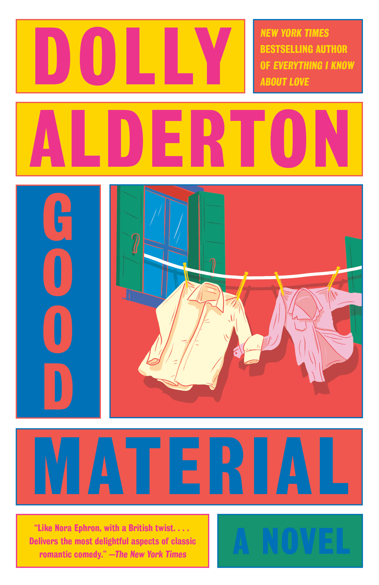

Currently reading Good Material by Dolly Alderton
From Goodreads: "Andy loves Jen. Jen loved Andy. And he can't work out why she stopped.
Now he is. . .
Without a home
Waiting for his stand-up career to take off
Wondering why everyone else around him seems to have grown up while he wasn't looking
Set adrift on the sea of heartbreak, Andy clings to the idea of solving the puzzle of his ruined relationship. Because if he can find the answer to that, then maybe Jen can find her way back to him. But Andy still has a lot to learn, not least his ex-girlfriend's side of the story…
In this sharply funny and exquisitely relatable story of romantic disaster and friendship, Dolly Alderton offers up a love story with two endings, demonstrating once again why she is one of the most exciting writers today, and the true voice of a generation."
Catch up on past reads

June Read: Circe by Madeline Miller